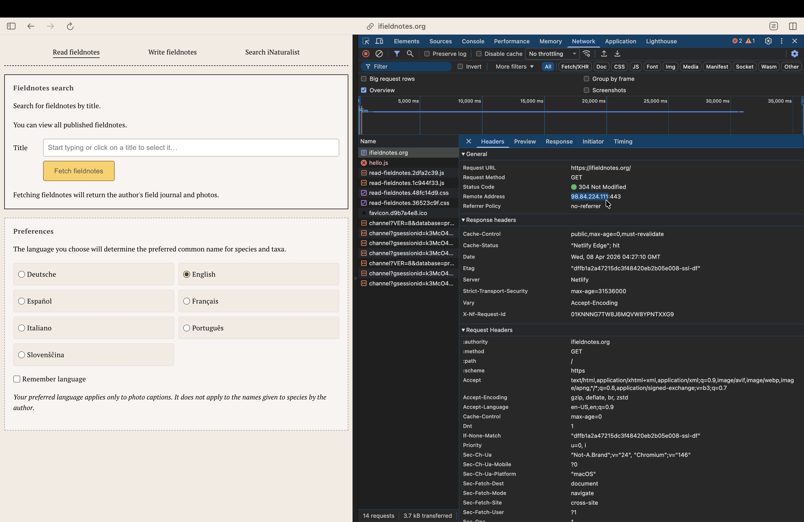
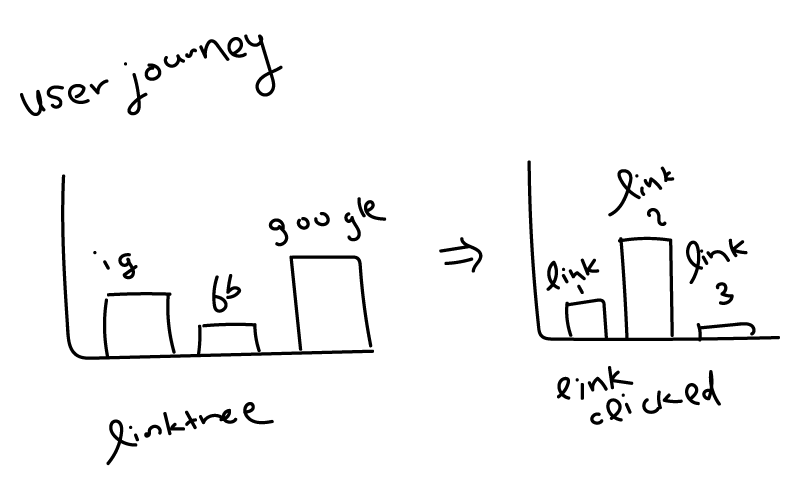

what happens when you enter a URL into a web browser?
a very brief introduction
based on a question i was once asked during an interview
anna y lin
what is a browser?
a program for browsing—hinting at a mental model metaphor akin to browsing papers on one's
desk, or browsing books at a library.
🔎C:\Users\Home\Desktop
- Directory
- Directory
- Directory
- Directory
- Directory
- Directory
local files explorer
🔎https://www.wikipedia.org
- Main
- Contents
- Events
- Random article
- About
- Contact
web browser
it's like a big file explorer, if you are familiar with the folder navigation interfaces of Windows and Apple
what is a website?
just like you would navigate to a folder on your desktop, a website is—at its simplest—a file hosted on a server
that is available to the public via a URL.
a website is simply an html file, sometimes styled with CSS, and sometimes Javascript for both styling and
interactivity.
what is a URL?
every website hosted publicly on a server gets an IP address, usually attached to whatever network the server is
using.
(your network at home also gets an IP address, because that is a port of entry to the internet.
that is also how people can geolocate you based on an IP address—sometimes—unless you use something like a
VPN).
a URL is a shortcut for accessing a website at an IP address. when you enter a URL into your browser, it will
lookup and fetch whatever resources are hosted at the IP address attached to that URL (i.e. www.website.com ->
98.84.224.111).

you can find the IP address and many more details about a website in the developer tools feature
available in every browser.
parsing a URL
all URLs follow a standard form:
🔎https://{domain name}.com/{directory}/{subdirectory}/{query}?{key}={value}
parsing a URL by parts
🔎https://linktr.ee/vlc?utm_source=ig&utm_medium=social&utm_content=link_in_bio
a linktr.ee URL that includes query parameters. vlc probably stands for the source i
copied this link from—Vera List Center. utm is a tracking keyword, telling the vendor that i
clicked this link from ig instagram, which they categorize as medium social, and the
content probably means that the link is from the bio section on their instagram profile, or
is just there to provide some additional context for the vendor.

with these URL query trackers, vendors can easily track a "user journey" through their websites, and
which links are most popular.
how does a website get hacked?
nothing online is safe. security is relative, depending on who has enough malice and enough intent.
the most notable attacks are denial-of-services (DoS/DDoS), which takes advantage of websites with basic security
protocols that prevents a large number of requests that can overwhelm a server, by denying to serve the website
after a max number of requests.
with enough intent, inspecting a website via the developer tools feature, can get you past
paywalls, recover hidden
media, and figure out the website's dependencies (AWS, WordPress, etc).
what does a VPN and CDN do?
a virtual private network (VPN) proxies all your requests from a different server, making it look like you are
browsing the internet from a different location than you are.
a content delivery network (CDN) optimizes your website by acting as a broker; it makes copies of your website
resources, and serves the "quickest" copy to visitors (i.e. if a visitor is visiting my website from New Zealand,
it
might serve the copy located on the CDN provider's server in Malaysia, rather than the copy located in New
York).
extra reading
here are some extra resources if you'd like to read more on related topics
- The Hidden Life of an Amazon User - Joana Moll (https://janavirgin.com/AMZ). Moll analyzes the entire user
journey of a user buying Jeff Bezos' book on Amazon, and prints out the entire source code.
- The work of Sam Lavigne and Tega Brain, a lot of which use user data / commons that are available to all but
capitalized on by private companies.
- User-Agent: If everything is so smooth, why am I so sad? - Anastasia
Kubrak (https://anastasiakubrak.com/User-Agent.pdf). This book is a collection of interviews and personal
anecdote, critically analyzing user interface design. It informed a lot of my thesis, and i think it's a fun
read.
- Are We Human? by Beatriz Colomina and Mark Wigley.
- Read more into system engineering guiding principles: reliability, availability, maintainability and safety
(RAMS); which can be interesting for anyone curious about why a consumer website like Amazon prioritizes
the availability of a user's ability to purchase over the accuracy of those purchases (i.e. ordering 1 vs 10 cat
toys).
- MITRE ATT&CK® Navigator (https://attack.mitre.org/) visualizes known adversary cyberattacks, if you are
interested in learning more about known attacks (for full disclosure, i used to work here).